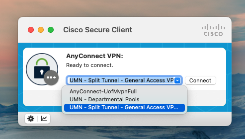

Finch Studio is an innovative modeling workbench to perform pharmacometric analyses. Constructing together with Mohamed Ismail from Enhanced Pharmacodynamics (ePD), this blog is illustating how to use Finch Studio on Minnesota Supercomputing Institute (MSI). The example project used for this blog tutorial has been shared in a UMN GHE repository.
1. Configure MSI SSH settings
1.1 Set up SSH key for the remote communication with MSI
Follow the tutorial specified by MSI to setup SSH key in your local computer.
1.2 Create ~/.ssh/config in the local machine
Run this in terminal,
```{bash}
cd ~/.ssh
ls
```If you can see file config in the output, then it means config has already been created in your local machine.
If you cannot see config in the output, run this in terminal,
```{bash}
touch ~/.ssh/config
```1.3 Add MSI front-end server as a new SSH host
Open config, copy and paste the following scripts. Replace your.msi.username with your X500 and save it.
```{bash}
Host agate.msi.umn.edu
HostName agate.msi.umn.edu
User your.msi.username
IdentityFile ~/.ssh/id_rsa
```1.4 Connect to VPN
MSI can only be accessed when
You are connected to eduroam network on campus.
You are off campus but connecting to the University’s Virtual Private Network (VPN). Please make sure when selecting a channel for connection, do NOT select the channel named “UMN - Departmental Pools”.

2. Install Finch Studio
For detailed Finch Studio installation, please follow the Finch Studio tutorials. Free academic license is generously provided for Finch Studio. Please make sure license is activated before going through the next steps.
3. Connect Finch Studio with MSI
- Open Finch Studio, select CONSOLE tab and click Remote option. Click Open SSH/SFTP Remote Connection tab.
- A connection setting window will pop-up.
You may notice that I have a connection that has been set up already. If this is the first time you set up SSH connection on Finch Studio, this window will be empty. In that case, just click + New Connection button on the top right. Fill in the blanks as shown in the picture below. This is a one-time configuration, once set up appropriately, it can be reused later.
- Connection Name: any name that you prefer
- Local Mount Point: a local directory for your project
- Remote Mount Point: a remote directory for your project
- User: MSI user name
- Host: MSI host
- Port: 22 as the default SSH port. Story behind it if you are interested…
- Private key: if you have gone through step 1.1 correctly, this should be the private key in
~/.ssh/id_rsa. Just copy and paste it in here. - Passphrase is recommended in step 1.1 percedure. If you have configured a SSH passohrase, enabling the passphrase option as shown below and enter your passphrase at the bottom.
The configuration of local and remote mount points is illustrated as shown below.
- Local project path: X:/User/SmithJ/documents/project1
- Local mount point
- Common project path
- Remote project path: /usr/1/jsmith/documents/project1
- Remote mount point
- Common project path
- Local project path: X:/User/SmithJ/documents/project1
- Once the connection has been configured, click Save and Connect. You should receive a pop-up window for the two-factor authentication.
- After authenticated through a preferred option, connection with MSI should be established. A window similar to below indicates a successful connection.
- If you configured your local and remote mount points appropriately, you should also be able to see them under File tab (Left pane: local; Right pane: remote). You can drag files between your local and remote mount points to upload and download files. The purpose of connecting Finch Studio to MSI is that we’d like to perform model fittings on MSI and visualize the results locally. So when we want to run a model on MSI, we will upload it to remote, and when we want to visualize the model fitting results, we will download it locally.
4. Run NONMEM through Finch Studio on MSI
Let’s use an example Finch-NONMEM project Drug-1 to illustrate how to perform NONMEM runs on MSI through Finch Studio.
- First, we’d like to open the model directory (e.g.,
/Users/shencheng/Documents/FinchStudio-local/Drug-1) and select the project (e.g.,Study-F1003-Asian-PK) to open.
- Then we can drag to copy the whole project directory from local to remote mount point.
- In Remote option under CONSOLE tab, make sure you enter the model directory that you’d like to execute first.
- Here, because MSI utilizes
slurmfor job submission and scheduling, we need to have a bash script set up in advance to interact with slurm (in my case, it is in/Users/shencheng/Documents/FinchStudio-local/Drug-1/Study-F1003-Asian-PK/models/test.sh). Here’an example bash script:
```{bash}
#!/bin/bash -l
#SBATCH --time=12:00:00
#SBATCH --mem=10g
#SBATCH --tmp=10g
#SBATCH --ntasks=1
#SBATCH --cpus-per-task=8
#SBATCH -L nonmem@slurmdb:1
#SBATCH --mail-type=ALL
#SBATCH --mail-user=user@umn.edu
#SBATCH -p msismall
#SBATCH --output=NONMEM.log # Log file name
ulimit -l unlimited
module load nonmem/750-rocky8
execute mod1.ctl -nm_output=xml,ext
```Many of the commands used in this bash script are detailed in the MSI. Below, we’ve provided explanations for a few selected commands that are not covered extensively in the MSI documentation:
#SBATCH -L nonmem@slurmdb:1specifies aNONMEMlicense. Currently, twoNONMEMlicenses are available at MSI, you can specify either#SBATCH -L nonmem@slurmdb:1or#SBATCH -L nonmem@slurmdb:2.#SBATCH -p msismallspecifies partition of the job. Please refer to this sheet to appropriately select the partition that fits your job.#SBATCH --output=NONMEM.logrequests a NONMEM output log for trouble shooting purpose.module load nonmem/750-rocky8loads theNONMEMprogram module at MSI HPCagate.execute mod1.ctl -nm_output=xml,extexecute a model fitting through PsN, requestxmlandextoutput.
To execute a model fitting, on the Models pane, right click the model that you’d like to execute, select Run (Advance).
A run command window should pop-up, here’re a few things to set up:
- We’d like to change run command from default to
sbatch test.shto execute the bash script. - Enable Execute on Remote Server and Copy File(s) Before Execution options.
- We’d like to
add fileto inFile(s) to Copy:- The whole project directory from
.to..
- The whole project directory from
- The bash script from
../test.shto.
- The bash script from
- Make sure to click SAVE PROFILE on top to reuse the run command next time.
- Click Execute button to execute the run.
- We’d like to change run command from default to

- While the model fitting is executing, you can check
NONMEM.loggenerated to monitor the progress. Following a successful execution, you should see model outputs on remote pane as shown below.
- To visualize the results via Finch Studio, you would want to download (select and drag from right to left) everything from remote to local. Afterwards, the modeling results can be visualized using the Finch Studio toolkit.
- Finch Studio requires different
NONMEMoutput files for different purposes as shown in the table below:
5. Cluster job monitoring
Finch Studio also has a well-designed cluster job monitor to monitor/kill job execution in real time. To access it, select the job monitor tab on the left and click Open Cluster Job Monitor.
Once opened up, you can search your MSI username and filter the jobs related to it. You can also check the info or kill the jobs as needed.
6. Summary
Theoretically, when executing jobs on MSI, Finch Studio can be used together with a variety of command line tools for model executions (
nmfe,bbi) and evaluations (vpcandbootstrapin PsN) given the appropriate configurations of each bash script.Please not that a few Finch Studio functionalities would also require the installation of licensed
NONMEMlocally. For example, the Finch Code Editor for error checking. IfNONMEMis not installed locally with license, these functionalities cannot be used.This blog aims to illustrate how Finch Studio can be integrated with MSI. Please note that this blog is NOT a thorough review of Finch Studio functionalities. For a comprehensive understanding of Finch Studio functionalities, please refer to Finch Studio tutorials.